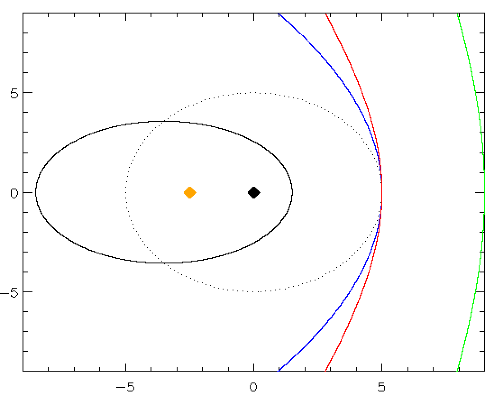

Forrige side🙂 🙁KjeglesnittFORUM

Hyperbler og parabler har også formel $$r(f)=\frac{p}{1-e\cos{f}}$$ men for
parabler er e = 1 og p = 2a
hyperbler er e > 1 og p = − a(1−e2)
mens vi husker at ellipser hadde e < 1 og p = a(1−e2)
Merk at for ellipser og hyperbler så er det kun et minustegn som skiller uttrykket for p. Årsaken til minustegnet er for å holde p positiv (r må jo være en positiv størrelse) når e plutselig har blitt større enn 1. I figuren til venstre så har alle kurvene a = 5 mens de to hyperblene har e = 2 (rød) og e = 2.8 (grønn). Neste side